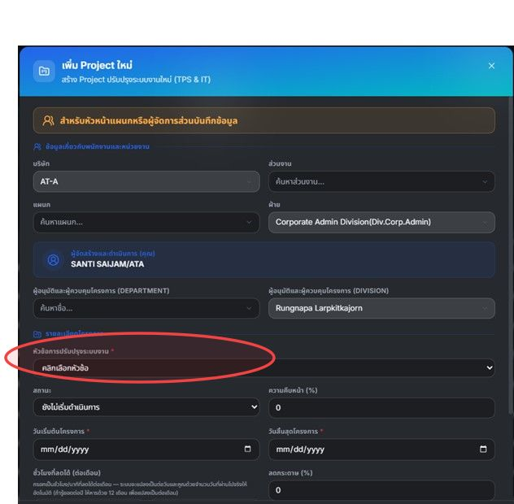
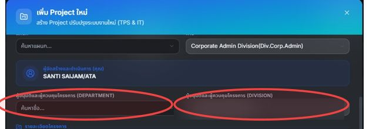
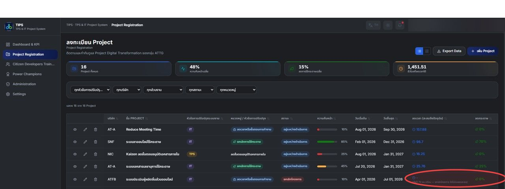
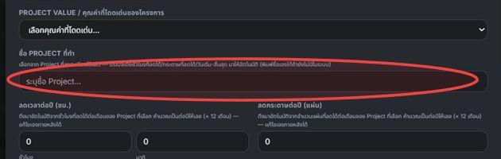

1TPS Standard Work กับvsと IT Digital Tools
ทุก Project ต้องเลือก "หัวข้อการปรับปรุงระบบงาน" ก่อนเป็นอันดับแรก ซึ่งจะกำหนดว่าฟอร์มที่เหลือหน้าตาเป็นอย่างไร Every Project must first select an "Improvement Topic" work type — this decides what the rest of the form looks like. すべてのプロジェクトは最初に「改善テーマ」を選択する必要があり、これによりフォームの残りの部分の内容が決まります。
งาน Kaizen หน้างานจริง ไม่ใช่ระบบที่ IT ต้องจัดเตรียมฐานข้อมูลให้ — ฟอร์มจะขอ ผู้รับผิดชอบหลัก (PIC) และ หัวข้อการปรับปรุง (Process Step Reduction / Waiting & Approval Time Reduction / Rework & Error Reduction / Information Search & Handover Time Reduction / Other) แทนชื่อ Project Real floor-level kaizen work, not something IT needs to provision a database for — the form asks for a Person in Charge (PIC) and an Improvement Topic (Process Step Reduction / Waiting & Approval Time Reduction / Rework & Error Reduction / Information Search & Handover Time Reduction / Other) instead of a Project Name. 現場レベルの実際のカイゼン活動であり、ITがデータベースを用意する必要はありません — フォームではプロジェクト名の代わりに担当者（PIC）と改善テーマ（工程削減／待ち時間・承認時間削減／手直し・エラー削減／情報検索・引継ぎ時間削減／その他）を入力します。
งานพัฒนาระบบ/แอป — ฟอร์มขอ ชื่อ Project, ชื่อย่อ, หมวดหมู่ (ยกเลิกการใช้กระดาษ / ลดเวลาหรือขั้นตอนการทำงาน) และ ฐานข้อมูล (SharePoint List หรือ Excel Business) พร้อมเครื่องมือที่ใช้พัฒนา Software/app development work — the form asks for a Project Name, Short Name, Category (eliminate paper / reduce time or steps) and a Database choice (SharePoint List or Excel Business), plus the tools used to build it. ソフトウェア／アプリ開発業務 — フォームではプロジェクト名、略称、カテゴリ（紙の使用廃止／時間・工程の削減）、およびデータベース（SharePoint ListまたはExcel Business）の選択、開発に使用したツールを入力します。

images/rule-worktype-dropdown.jpg2ใครสร้าง Project ได้บ้างWho Can Create a Projectプロジェクトを作成できる人
เฉพาะพนักงานตำแหน่งระดับ Section Head ขึ้นไป เท่านั้นที่สร้าง Project ใหม่ได้ Only employees at Section Head level or above may create a new Project. Section Head以上の役職の従業員のみが新規プロジェクトを作成できます。
Operator, Leader, Staff, Officer, Engineer, Foreman, Senior Foreman
Section Head, Manager, General Manager, Advisor, Plant Manager, President, Executive General Manager, Vice President, Executive Vice President
รายละเอียดการทำงานHow it behaves動作の詳細
- ตรวจจากตำแหน่งจริงใน Master Data พนักงาน (ไม่ใช่จากบทบาท Admin ในแอป)Checked against the employee's real position on file in Master Data (not the app's Admin role).アプリのAdmin権限ではなく、マスターデータ上の実際の役職に基づいて判定されます。
- บัญชี IT Support ไม่ถูกบล็อค (นับเป็นบัญชีเครื่องมือกลาง ไม่ใช่ตำแหน่งจริง)The IT Support account is exempt (treated as a shared utility login, not a real position).IT Supportアカウントは対象外です（実際の役職ではなく共通の運用アカウントとして扱われます）。
- ถ้ายังหาข้อมูลตำแหน่งของผู้ใช้ไม่เจอ (Master Data ยังโหลดไม่เสร็จ หรือไม่มีข้อมูล) ระบบจะ "อนุญาตไว้ก่อน" ไม่บล็อค เพื่อไม่ให้คนที่ควรจะสร้างได้ถูกล็อกออกจากปัญหาข้อมูลที่ไม่ใช่ความผิดเขาIf the user's position can't be resolved yet (Master Data still loading, or genuinely missing), the system allows by default rather than blocking — so nobody who should be able to create a Project gets locked out by a data issue that isn't their fault.ユーザーの役職がまだ判定できない場合（マスターデータ読み込み中、または情報が存在しない場合）、システムはブロックせずデフォルトで許可します — 本来作成できるはずの人が、自分の責任ではないデータの問題でロックアウトされないようにするためです。
- บล็อคเฉพาะการ "สร้าง" Project ใหม่เท่านั้น ไม่กระทบการแก้ไข Project ที่มีอยู่แล้วOnly blocks creating a new Project — does not affect editing an existing one.新規プロジェクトの「作成」のみをブロックし、既存プロジェクトの編集には影響しません。
3สายการอนุมัติApproval Chain承認フロー
ฟอร์ม Project มีช่องผู้อนุมัติ 2 ระดับ ดึงรายชื่อจาก Master Data จริง (PM-UP list) ไม่ใช่รายชื่อพนักงานทั่วไป The Project form has two approver fields, populated from real Master Data (the PM-UP list) — not the general Employee list. プロジェクトフォームには2段階の承認者欄があり、一般の従業員リストではなく実際のマスターデータ（PM-UPリスト）から取得されます。
ชื่อ Field ในระบบไม่ตรงกับความหมายที่แสดงจริงField name in the system doesn't match what it actually displaysシステム上のフィールド名は実際の表示内容と一致しません
| ชื่อ FieldField nameフィールド名 | ป้ายที่เห็น / เก็บผู้อนุมัติระดับLabel shown / actually stores approver level表示ラベル／実際に格納される承認者レベル |
|---|---|
sectionApprover | ผู้อนุมัติและผู้ควบคุมโครงการ (Department)Project Approver (Department)プロジェクト承認者（部門） |
departmentApprover | ผู้อนุมัติและผู้ควบคุมโครงการ (Division)Project Approver (Division)プロジェクト承認者（事業部） |
ชื่อ field ในฐานข้อมูลถูกคงไว้ตามเดิมเพื่อไม่ต้อง Migrate ข้อมูล — เปลี่ยนแค่ที่มาของข้อมูลและป้ายที่แสดงบนจอเท่านั้น The database field names were kept as-is to avoid a migration — only where the data comes from and what's shown on screen changed. データベースのフィールド名はマイグレーションを避けるためそのまま維持されています — 変更されたのはデータの取得元と画面表示のみです。

images/rule-approver-fields.jpgการกรอกอัตโนมัติAuto-fill自動入力
เมื่อกด "+ เพิ่ม Project" ระบบจะกรอกบริษัท/ส่วนงาน/แผนก/ฝ่าย และผู้อนุมัติทั้ง 2 ระดับให้อัตโนมัติจากข้อมูลพนักงานของผู้ล็อกอิน (และหัวหน้าหน่วยงานเดียวกัน) — ช่องที่ถูกกรอกให้อัตโนมัติจะมีพื้นหลังสีเทา เพื่อบอกว่า "กรอกให้แล้ว" แต่ยังแก้ไขเองได้ Clicking "+ Add Project" auto-fills Company/Department/Section/Division and both approver fields from the signed-in user's own Employee record (and whoever heads that same unit) — auto-filled fields get a grey background as a hint that "this was already filled in," while staying fully editable. 「＋ Project追加」をクリックすると、サインイン中のユーザーの従業員データ（および同じ部署の責任者）から会社／ส่วนงาน／แผนก／事業部と両方の承認者欄が自動入力されます — 自動入力されたフィールドはグレー背景になり「入力済み」であることを示しますが、引き続き自由に編集できます。
4โครงการที่ยกเลิก/พักไว้ (Cancelled / On Hold)Cancelled / On Hold Projectsキャンセル／保留中のプロジェクト
อัปเดต 2026-08-17: "ยกเลิกโครงการ" กับ "พักโครงการชั่วคราว" ไม่ได้ทำงานเหมือนกันอีกต่อไป — ยกเลิกยังคงเป็น 0 เสมอเหมือนเดิม แต่พักโครงการชั่วคราวตอนนี้ "ค้างยอด" ไว้ ณ วันที่กดพัก แทนที่จะรีเซ็ตเป็น 0 (ดูหมวด 6 "ตรรกะเบื้องหลังตัวเลข KPI" สำหรับตัวอย่างคำนวณ) Updated 2026-08-17: "Cancelled" and "On Hold" no longer behave the same way — Cancelled still always reads 0, but On Hold now freezes the accrued total at the date it was paused, instead of resetting to 0 (see section 6, "Logic Behind the KPI Numbers", for a worked example). 2026-08-17更新：「キャンセル」と「一時保留」はもはや同じ動作をしません — キャンセルは引き続き常に0ですが、一時保留は現在、0にリセットされるのではなく、保留にした時点の累計値を凍結します（計算例はセクション6「KPI数値の裏側にあるロジック」を参照）。
ยกเลิกโครงการ (Cancelled) — เป็น 0 เสมอ ตัดออกจากทุกยอดรวมCancelled — always 0, excluded from every totalキャンセル — 常に0、すべての集計から除外
โครงการที่ยกเลิกไม่เคยส่งมอบผลลัพธ์ตามที่วางแผนไว้จริง จึงไม่ควรทำให้ตัวเลข "ประหยัดได้เท่าไหร่" สูงเกินจริง — พฤติกรรมนี้ไม่เปลี่ยนแปลง A cancelled project never delivered what it originally projected, so it shouldn't inflate any "how much have we actually saved" number — this behavior is unchanged. キャンセルされたプロジェクトは当初予定していた成果を達成していないため、「実際にどれだけ削減できたか」という数値を過大に見せるべきではありません — この動作に変更はありません。
พักโครงการชั่วคราว (On Hold) — ค้างยอด ณ วันที่พัก ไม่ใช่ 0On Hold — freezes at the pause date, not 0一時保留 — 保留日で凍結、0ではない
เดิม On Hold ถูกปฏิบัติเหมือน Cancelled ทุกประการ (เป็น 0 เสมอ) — แต่พบว่านั่นทำให้งานที่ทำไปแล้วจริงก่อนกดพัก "หายไป" จาก Dashboard ทันที ทั้งที่ยังไม่ได้ถูกยกเลิก ตอนนี้ระบบจะเก็บวันที่กดพักไว้ (pausedAt) แล้วคำนวณยอดสะสมค้างไว้ ณ วันนั้น (เหมือนกับที่สถานะ "เสร็จสิ้น" ใช้วันสิ้นสุดโครงการ) — ยอดจะไม่โตขึ้นอีกระหว่างที่ยังพักอยู่ แต่ก็ไม่ลดลงเป็น 0 เช่นกัน On Hold used to be treated exactly like Cancelled (always 0) — but that meant real work already done before pausing would vanish from the Dashboard immediately, even though the Project hadn't actually been cancelled. The system now stores the date it was paused (pausedAt) and freezes the accrued total there (the same treatment "Completed" already gives the project's end date) — the number stops growing while paused, but it doesn't drop to 0 either. 以前は一時保留もキャンセルとまったく同じ扱い（常に0）でした — しかしそれでは、実際にキャンセルされたわけではないのに、保留前にすでに行った実際の作業がDashboardから即座に消えてしまうことになります。現在システムは保留にした日付（pausedAt）を保存し、その時点で累計値を凍結します（「完了」ステータスがプロジェクト終了日に対して行うのと同じ扱いです）— 保留中は数値が増加しなくなりますが、0に戻ることもありません。
กลับมาทำต่อ (Resume): ถ้าเปลี่ยนสถานะออกจาก On Hold ภายหลัง (เช่น กลับเป็น "กำลังดำเนินการ") ระบบจะบันทึกจำนวนวันที่พักไปสะสมไว้ (pausedDaysTotal) แล้วคำนวณยอดต่อโดยข้ามช่วงที่พักไป — ไม่นับรวมเป็นวันที่ทำงานจริง แม้จะพัก-กลับมาทำต่อหลายรอบก็ยังคำนวณถูกต้องสะสมไปเรื่อยๆ Resuming: if the status later changes away from On Hold (e.g. back to "In Progress"), the system banks the number of days it was paused (pausedDaysTotal) and continues accruing while skipping the paused period — those days never count as real working time. This stays correct even across multiple pause/resume cycles on the same Project. 再開：後でステータスが一時保留から変更された場合（例：「進行中」に戻る）、システムは保留していた日数を積算し（pausedDaysTotal）、保留期間をスキップして集計を継続します — その期間は実際の作業日数としてカウントされません。同一プロジェクトで複数回の保留・再開を繰り返しても正しく積算されます。
ตัวเลขที่ถูกตัดออก (เฉพาะ Cancelled)What gets excluded (Cancelled only)除外される項目（キャンセルのみ）
รายการด้านล่างนี้ใช้กับ Cancelled เท่านั้น — On Hold ยังคงมีส่วนร่วมในทุกยอดรวมด้านล่าง เพียงแต่เป็นยอดที่ค้างไว้ ไม่ใช่ยอดที่ยังโตขึ้นเรื่อยๆ: The list below applies to Cancelled only — an On Hold Project still contributes to every total below, just with a frozen (not still-growing) number: 以下のリストはキャンセルのみに適用されます — 一時保留中のプロジェクトは以下のすべての集計に引き続き寄与しますが、増加し続ける数値ではなく凍結された数値です：
- การ์ด KPI ในหน้า Projects (ชั่วโมงที่ลดได้ / ลดกระดาษเฉลี่ย)The KPI cards on the Projects page (hours saved / average paper reduction)Projectsページ内のKPIカード（削減時間／平均紙削減率）
- การ์ดมูลค่าบน Executive Dashboard (Automation Value, Paperless Value)The Executive Dashboard value cards (Automation Value, Paperless Value)Executive Dashboardの価値カード（Automation Value、Paperless Value）
- Strategic Goals Pillar cards, กราฟ Reduce Time by Division/Section, กราฟ Paper Reduction TrendStrategic Goals Pillar cards, the Reduce Time by Division/Section charts, the Paper Reduction Trend chartStrategic Goals Pillarカード、Reduce Time by Division/Sectionグラフ、Paper Reduction Trendグラフ
- Section Dashboard (ManagerDashboardPage) ทุกตัวเลขEvery number on the Section Dashboard (ManagerDashboardPage)Section Dashboard（ManagerDashboardPage）のすべての数値
- หน้าอันดับมูลค่าโครงการ (Project Value Rankings) — ดูหมวด 8The Project Value Rankings page — see section 8プロジェクト価値ランキングページ — セクション8を参照

images/rule-cancelled-note.jpg5เงื่อนไขการกรอกข้อมูลData-Entry Rulesデータ入力ルール
ช่องที่มี * สีแดงคือช่องบังคับ — เงื่อนไขบังคับต่างกันตามหัวข้อการปรับปรุงระบบงานที่เลือก Fields marked with a red * are required — which fields are required depends on the selected work type. 赤い*が付いた項目は必須です — 必須項目は選択した改善テーマの種類によって異なります。
| เสมอ (ทั้ง 2 ประเภท)Always (both types)常に（両タイプ共通） | หัวข้อการปรับปรุงระบบงาน, วันเริ่มต้นโครงการ, วันสิ้นสุดโครงการ Work type, Project Start Date, Project End Date 改善テーマ、プロジェクト開始日、プロジェクト終了日 |
|---|---|
| IT Digital Tools | ชื่อ Project, หมวดหมู่, ฐานข้อมูลที่ต้องการใช้งาน, เครื่องมือ Power Platform/AI ที่ใช้ในการพัฒนา Project Name, Category, Database, Power Platform/AI Tools Used プロジェクト名、カテゴリ、使用するデータベース、開発に使用したPower Platform／AIツール |
| TPS Standard Work | ไม่มีช่องเพิ่มเติมที่บังคับ (PIC และหัวข้อการปรับปรุงเป็นทางเลือก) No additional required fields (PIC and Improvement Topic are optional) 追加の必須項目はありません（PICと改善テーマは任意） |
| ลดกระดาษ (%)Paper Reduction (%)紙削減率（%） | บังคับกรอกมากกว่า 0 เฉพาะเมื่อเลือกหมวดหมู่ "ยกเลิกการใช้กระดาษ" เท่านั้น Required to be greater than 0 only when Category = "eliminate paper" カテゴリが「紙の使用廃止」の場合のみ、0より大きい値の入力が必須 |
6ตรรกะเบื้องหลังตัวเลข KPILogic Behind the KPI NumbersKPI数値の裏側にあるロジック
เพื่อให้อ่านตัวเลขในแอปได้ถูกต้อง ไม่เข้าใจผิดว่าระบบคำนวณผิด So the numbers in the app are read correctly, instead of assuming the system calculated something wrong. アプリ内の数値を正しく理解し、システムの計算が間違っていると誤解しないために。
🕐 ยอดสะสมรายวัน (Live Accrual) — หัวใจของทุกตัวเลข🕐 Live Day-by-Day Accrual — the core of every number🕐 ライブ日次集計 — すべての数値の中核
ตั้งแต่ 2026-08-16 "ชั่วโมงที่ลดได้"/"ลดกระดาษ" ที่แสดงในทุกหน้า Dashboard ไม่ใช่ตัวเลขที่กรอกตรงๆ แต่คำนวณสดใหม่ทุกครั้งที่เปิดแอป ด้วยสูตร: Since 2026-08-16, the "hours saved"/"paper reduced" figures shown across every Dashboard page are not the raw entered numbers — they're recomputed fresh every time the app is opened, using this formula: 2026-08-16以降、各Dashboardページに表示される「削減時間」／「紙削減」の数値は、入力された生の数値ではなく、アプリを開くたびに以下の計算式で新たに算出されます：
| อัตราต่อวันDaily rate日次レート | อัตราต่อเดือน ÷ (365.25 ÷ 12) — ค่าเฉลี่ยจำนวนวันต่อเดือน ≈ 30.4375 วัน— average days per month ≈ 30.4375— 平均月間日数 ≈ 30.4375日 |
|---|---|
| วันที่ผ่านไปจริงReal elapsed days実経過日数 | วันสิ้นสุดที่มีผล − วันเริ่มต้นโครงการ |
| ยอดสะสมAccrued total累計 | อัตราต่อวัน × วันที่ผ่านไปจริง |
"วันสิ้นสุดที่มีผล" ขึ้นกับสถานะ (อัปเดต 2026-08-17): ยกเลิก → ยอดสะสม = 0 เสมอ · พักโครงการชั่วคราว → ใช้วันที่กดพัก (pausedAt) เป็นวันสิ้นสุดที่มีผล (ค้างยอดไว้ ไม่ใช่ 0) · เสร็จสิ้น → ใช้วันสิ้นสุดโครงการเต็มช่วง (แม้เสร็จก่อนกำหนดก็นับเต็ม) · ยังไม่เริ่ม/กำลังดำเนินการ → ใช้ min(วันนี้, วันสิ้นสุดโครงการ) ปัดค่าติดลบ (วันเริ่มยังไม่ถึง) เป็น 0 เสมอ — และในทุกสถานะที่ไม่ใช่พักไว้ จำนวนวันที่ผ่านไปจริงจะหักลบวันที่เคยพักไว้ในอดีตออกก่อน (pausedDaysTotal) ถ้า Project นั้นเคยผ่านการพัก-กลับมาทำต่อมาก่อน
"Effective end date" depends on status (updated 2026-08-17): Cancelled → accrued total is always 0 · On Hold → uses the date it was paused (pausedAt) as the effective end date (frozen, not 0) · Completed → uses the full project end date (counts fully even if finished early) · Not Started/In Progress → uses min(today, project end date), with negative values (start date not yet reached) always floored to 0 — and for every non-paused status, the real elapsed-day count first subtracts any past paused days on record (pausedDaysTotal), if this Project has ever been paused and resumed before.
「有効終了日」はステータスによって決まります（2026-08-17更新）：キャンセル → 累計は常に0 · 一時保留 → 保留にした日付（pausedAt）を有効終了日として使用（凍結、0ではない）· 完了 → プロジェクト終了日を全期間分使用（早期完了でも全期間分カウント）· 未着手／進行中 → min(今日, プロジェクト終了日)を使用し、負の値（開始日未到来）は常に0に切り捨て — 保留中以外のすべてのステータスにおいて、このProjectが過去に保留・再開されたことがある場合、実経過日数の計算前に過去の保留日数（pausedDaysTotal）が差し引かれます。
ทศนิยมแสดงผลปัดไม่เกิน 2 ตำแหน่งทุกจุด — ไม่มี Cache/Cron แยกต่างหาก คำนวณสดล้วนๆ ทุกครั้งที่โหลดหน้า Displayed decimals are always capped at 2 places — there's no separate cache/cron job, everything is computed live on every page load. 表示される小数は常に小数点2桁までに制限されます — 別途のキャッシュ／Cronジョブはなく、ページ読み込みのたびにすべてライブで計算されます。
📐 ตัวอย่างคำนวณจริง — จากตัวเลขที่กรอก ไปเป็นยอดสะสมที่เห็นในตาราง📐 A worked example — from what's entered to the accrued number shown in the table📐 具体的な計算例 — 入力値から表に表示される累計値まで
สมมติ Project ตั้งไว้ 5 ชม. 25 นาที/เดือน, สถานะ "เสร็จสิ้น", วันเริ่ม 24 มิ.ย. 2026, วันสิ้นสุด 31 ก.ค. 2026 (ห่างกัน 37 วัน): Say a Project is set to 5 hrs 25 min/month, status "Completed", start date 24 Jun 2026, end date 31 Jul 2026 (37 days apart): 例えば、あるProjectが月5時間25分に設定され、ステータスは「完了」、開始日は2026年6月24日、終了日は2026年7月31日（37日間）だとします：
| 1. แปลงเป็นทศนิยม1. Convert to decimal1. 小数に変換 | 5 + 25÷60 = 5.4167 ชม./เดือนhrs/month時間／月 |
|---|---|
| 2. หาอัตราต่อวัน2. Get the daily rate2. 日次レートを算出 | 5.4167 ÷ 30.4375 = 0.17796 ชม./วันhrs/day時間／日 |
| 3. คูณด้วยจำนวนวัน3. Multiply by the day count3. 日数を掛ける | 0.17796 × 37 วันdays日 = 6.58 ชม.hrs時間 |
→ 6.58 ชม. คือตัวเลขที่เห็นในคอลัมน์ "ลดเวลา (สะสมถึงปัจจุบัน)" — เพราะสถานะเป็น "เสร็จสิ้น" จึงนับเต็มทั้ง 37 วันของโครงการ (ไม่ใช่แค่ถึงวันนี้) ถ้าสถานะยังเป็น "กำลังดำเนินการ" อยู่ ขั้นตอนที่ 3 จะใช้ min(วันนี้, วันสิ้นสุดโครงการ) แทนวันสิ้นสุดเต็มช่วง — ตัวเลขจะค่อยๆ ไต่ขึ้นทุกวันจนกว่าจะถึงวันสิ้นสุดหรือถูกปิดเป็น "เสร็จสิ้น"
→ 6.58 hrs is what shows in the "Hours Saved (accrued to date)" column — since the status is "Completed", it counts the full 37-day project span (not just up to today). If it were still "In Progress", step 3 would use min(today, project end date) instead of the full end date — the number would keep climbing day by day until the end date or the status is set to "Completed".
→ 「削減時間（現在までの累計）」列に表示されるのが6.58時間です — ステータスが「完了」であるため、プロジェクトの全期間37日分をカウントします（今日までではありません）。もし「進行中」のままであれば、ステップ3では全終了日ではなくmin(今日, プロジェクト終了日)を使用します — 終了日に達するか、ステータスが「完了」に設定されるまで、数値は日々少しずつ増加していきます。
📐 ตัวอย่างที่ 2 — งานเป็นชิ้น/ครั้ง (ไม่ใช่งานประจำทุกวัน)📐 Example 2 — a one-off/batch task (not a recurring daily process)📐 例2 — 単発／バッチ作業（毎日の反復業務ではない場合）
IT ต้องติดตั้ง PC ใหม่ทดแทนเครื่องที่ครบอายุใช้งาน ตาม Master Plan 3 ปีของ AT-A — รวม 45 เครื่องใน 3 ปี, วิธีติดตั้งแบบเดิมใช้ 60 นาที/เครื่อง วิธีใหม่ใช้ 20 นาที/เครื่อง ลดได้ 30 นาที/เครื่อง (แนะนำ: เช็คให้แน่ใจว่าตัวเลขที่ลดได้ตรงกับ 60−20 จริงๆ ก่อนคีย์ข้อมูลจริง) IT needs to install new PCs to replace machines that have reached end-of-life, per AT-A's 3-year Master Plan — 45 machines over 3 years. The old install method took 60 min/machine, the new method takes 20 min/machine, saving 30 min/machine (tip: double-check the saved figure actually matches 60−20 before keying in real data). AT-Aの3ヵ年マスタープランに基づき、耐用年数を迎えたPCを新しいPCに交換します — 3年間で45台。従来の設置方法は1台あたり60分、新しい方法は1台あたり20分で、1台あたり30分削減されます（ヒント：実際のデータを入力する前に、削減時間が60−20と一致しているか確認してください）。
| 1. ยอดรวมทั้งแผน1. Total across the whole plan1. プラン全体の合計 | 45 เครื่องmachines台 × 30 นาทีmin分 = 1,350 นาทีmin分 = 22.5 ชม.hrs時間 |
|---|---|
| 2. ระยะเวลาทั้งแผน2. Total plan duration2. プラン全体の期間 | 3 ปีyears年 = 36 เดือนmonthsヶ月 |
| 3. ยอดที่ต้องกรอกต่อเดือน3. What to enter per month3. 月間入力値 | 22.5 ชม.hrs時間 ÷ 36 เดือนmonthsヶ月 = 0.625 ชม./เดือนhrs/month時間／月 ≈ 0 ชม.hrs時間 38 นาทีmin分 |
→ กรอก 0 ชม. 38 นาที/เดือน ในช่อง "ชั่วโมงที่ลดได้ (ต่อเดือน)" และตั้งวันเริ่มต้น/สิ้นสุดโครงการให้ครอบคลุมเต็มช่วง 3 ปีของแผน (เช่น วันนี้ → อีก 3 ปีข้างหน้า) — สำคัญมาก เพราะระบบจะเอายอดต่อเดือนนี้ไปกระจายเป็นยอดสะสมตามจำนวนวันที่ผ่านไปจริงในช่วงที่ตั้งไว้ ถ้าตั้งช่วงเวลาสั้นกว่าแผนจริง ยอดสะสมจะโตเร็วเกินความเป็นจริง งานลักษณะนี้เหมาะกับหัวข้อการปรับปรุง "TPS Standard Work and Kaizen" (ลดขั้นตอน/เวลาการทำงาน) มากกว่า "IT Digital Tools" เพราะเป็นการปรับปรุงกระบวนการหน้างาน ไม่ใช่การพัฒนาแอป → Enter 0 hrs 38 min/month in "Hours Saved (per month)" and set the project's start/end dates to span the full 3-year plan (e.g. today → 3 years from now) — this matters a lot, because the system spreads this monthly figure into an accrued total based on how many days have really elapsed within that window. Setting a shorter window than the real plan would make the accrued number climb faster than reality. Work like this fits the "TPS Standard Work and Kaizen" work type (Improvement Topic: reducing process time/steps) better than "IT Digital Tools", since it's a floor-level process improvement, not app development. → 「削減時間（月間）」欄に0時間38分／月を入力し、かつプロジェクトの開始日／終了日を3ヵ年プラン全体（例：今日から3年後まで）に設定してください — これは非常に重要です。システムはこの月間数値を、設定した期間内で実際に経過した日数に基づいて累計に配分するためです。実際のプランより短い期間を設定すると、累計値が実際より速く増加してしまいます。この種の作業はアプリ開発ではなく現場レベルのプロセス改善であるため、「IT Digital Tools」よりも「TPS Standard Work and Kaizen」（改善テーマ：工程・時間の削減）の方が適しています。
📐 ตัวอย่างที่ 3 — พักโครงการแล้วกลับมาทำต่อ (On Hold freeze + resume)📐 Example 3 — pausing a Project, then resuming it (On Hold freeze + resume)📐 例3 — プロジェクトを保留し、その後再開する（On Holdの凍結と再開）
สมมติ Project ตั้งไว้ 10 ชม./เดือน (อัตราต่อวัน = 10 ÷ 30.4375 = 0.3286 ชม./วัน) เริ่ม 1 ม.ค. 2026: Say a Project is set to 10 hrs/month (daily rate = 10 ÷ 30.4375 = 0.3286 hrs/day), starting 1 Jan 2026: 例えば、あるProjectが月10時間に設定され（日次レート = 10 ÷ 30.4375 = 0.3286時間／日）、2026年1月1日に開始したとします：
| 1. กดพัก 31 ม.ค. (ผ่านมา 30 วัน)1. Paused on 31 Jan (30 days in)1. 1月31日に保留（30日経過） | 0.3286 × 30 = 9.86 ชม. — ค้างไว้ตรงนี้hrs — frozen here時間 — ここで凍結 |
|---|---|
| 2. กลับมาทำต่อ 20 ก.พ. (พักไป 20 วัน)2. Resumed on 20 Feb (paused 20 days)2. 2月20日に再開（20日間保留） | pausedDaysTotal = 20 วัน (บันทึกไว้ ยังไม่ลบยอดอะไร)days (banked, doesn't remove anything yet)日（積算のみ、まだ何も差し引かれない） |
| 3. เปิดดูวันที่ 2 มี.ค. (ผ่านมาจริง 60 วันจากวันเริ่ม)3. Checked again on 2 Mar (60 raw days since start)3. 3月2日に再確認（開始から実際60日経過） | 60 − 20 = 40 วันที่นับจริงeffective days有効日数 → 0.3286 × 40 = 13.14 ชม.hrs時間 |
→ ระหว่างวันที่ 31 ม.ค. – 20 ก.พ. (ตอนยังพักอยู่) ตัวเลขในตารางจะค้างที่ 9.86 ชม. นิ่งๆ ไม่ขยับ แม้จะเปิดหน้าเว็บซ้ำกี่ครั้งก็ตาม — พอกลับมาทำต่อและเวลาผ่านไปอีก ตัวเลขจะเริ่มขยับขึ้นอีกครั้งจาก 13.14 ชม. (ไม่ใช่นับต่อจาก 9.86 ชม. ตรงๆ เพราะ 20 วันที่พักไปถูกข้ามไม่นับ) ถ้า Project นี้พัก-กลับมาทำต่ออีกในอนาคต หลักการเดียวกันนี้จะใช้ซ้ำทุกครั้ง → Between 31 Jan and 20 Feb (while still paused), the table shows a steady 9.86 hrs that doesn't move, no matter how many times the page is reloaded — once resumed and more time passes, the number starts climbing again from 13.14 hrs (not simply continuing on from 9.86 hrs, since the 20 paused days are skipped). If this Project is paused and resumed again later, the same logic repeats each time. → 1月31日から2月20日まで（保留中）は、ページを何度再読み込みしても表の数値は9.86時間のまま変化しません — 再開後さらに時間が経過すると、数値は13.14時間から再び増加を始めます（9.86時間からそのまま継続するのではなく、保留していた20日間はスキップされます）。このProjectが今後再び保留・再開された場合も、同じロジックがそのたびに適用されます。
Time Reduction % คำนวณจากอะไรWhat Time Reduction % is calculated fromTime Reduction %の計算方法
= (รวมยอดสะสมชั่วโมงที่ลดได้ ทุก Project ที่ยังไม่ยกเลิก/พักไว้) ÷ (จำนวนผู้ถือ License O365 x ชั่วโมงทำงานมาตรฐานต่อปี) — ใช้ฐาน License (1,166 คน) แทนจำนวนพนักงานทั้งหมด (4,000+ คน) เพราะมีแค่คนถือ License เท่านั้นที่ใช้เครื่องมือ Power Platform ได้จริง การหารด้วยฐานพนักงานทั้งหมดจะทำให้ % ปัดเป็น 0 เสมอ — "ชั่วโมงทำงานมาตรฐานต่อปี" ค่าเริ่มต้น 2,080 ชม. (8 ชม./วัน × 260 วันทำงาน) ตอนนี้ตั้งค่าใหม่ได้จากหน้า Administration → KPI Targets ไม่ใช่ค่าคงที่ตายตัวในโค้ดอีกต่อไป = (sum of the accrued hours-saved total across every non-Cancelled/non-On-Hold Project) ÷ (O365 license holders × standard annual work hours) — uses the license count (1,166) instead of total headcount (4,000+), since only license holders can actually use these Power Platform tools; dividing by total headcount would always round to 0%. "Standard annual work hours" defaults to 2,080 (8 hrs/day × 260 workdays) but is now admin-configurable from Administration → KPI Targets, no longer a fixed constant in the code. ＝（キャンセル／保留中でないすべてのプロジェクトの累計削減時間の合計）÷（O365ライセンス保有者数 × 年間標準労働時間）— 全従業員数（4,000人以上）ではなくライセンス保有者数（1,166人）を使用します。実際にPower Platformツールを利用できるのはライセンス保有者のみであり、全従業員数で割ると常に0%に丸められてしまうためです。「年間標準労働時間」はデフォルトで2,080時間（1日8時間×年間260労働日）ですが、現在はAdministration → KPI Targetsから管理者が設定可能になっており、コード内の固定定数ではなくなりました。
ทำไม % แสดงทศนิยม 2 ตำแหน่งWhy percentages show 2 decimal placesパーセンテージが小数点2桁で表示される理由
ที่ฐาน License 1,166 คน ตัวเลขจริงมักต่ำกว่า 0.1% — ถ้าปัดแค่ 1 ตำแหน่งจะเห็นเป็น 0% เสมอในช่วงเริ่มโครงการ ทั้งที่มีความคืบหน้าจริงอยู่ Against the 1,166-license baseline, real values are often under 0.1% — rounding to just 1 decimal made all early-stage progress invisible, showing a flat 0% even when real progress existed. 1,166人のライセンス保有者を基準とすると、実際の数値は0.1%未満になることが多く — 小数点1桁までの丸めでは初期段階の進捗がすべて見えなくなり、実際には進捗があっても常に0%と表示されてしまいます。
ทำไม Division/Section ที่ชื่อซ้ำกันไม่ถูกรวมยอดผิดบริษัทWhy same-named Divisions/Sections across companies don't get merged複数の会社で同名のDivision／Sectionが誤って合算されない理由
หลายบริษัทมีชื่อฝ่ายซ้ำกัน (เช่น "Production", "Administration") — ระบบจึงจัดกลุ่มโดยรวม บริษัท+ฝ่าย เข้าด้วยกันเสมอ ไม่ใช่ชื่อฝ่ายเพียงอย่างเดียว เพื่อไม่ให้ % ของฝ่ายหนึ่งถูกเจือจางด้วยยอดของอีกบริษัท Several companies share generic division names ("Production", "Administration") — the system always groups by company+division together, never division name alone, so one division's % isn't diluted by another company's numbers. 複数の会社が「Production」「Administration」のような一般的な事業部名を共有しています — システムは常に会社＋事業部の組み合わせでグループ化し、事業部名のみでは決してグループ化しません。これにより、ある事業部の割合が他社の数値によって希薄化されることを防ぎます。
7สิทธิ์การเข้าถึงและ AdminAccess & Admin Rightsアクセス権限と管理者
ใครเห็นเมนู/ปุ่มอะไรได้บ้าง และเงื่อนไขเบื้องหลัง Who sees which menus/buttons, and the conditions behind them. 誰がどのメニュー／ボタンを利用できるか、その条件。
Export เป็น ExcelExport to ExcelExcelへのエクスポート
จำกัดเฉพาะรายชื่อ Admin/ผู้มีสิทธิ์เมนูพิเศษเท่านั้น — ผู้ใช้ทั่วไปยังเห็นปุ่มอยู่ แต่จะถูกปิดใช้งาน (สีจาง) พร้อมคำอธิบายเมื่อชี้เมาส์ แทนที่จะซ่อนปุ่มไปเลย Restricted to the Admin/special-nav-access list — regular users still see the button, just greyed out with an explanatory tooltip, rather than it being hidden entirely. Admin／特別なナビゲーションアクセス権を持つリストに限定されています — 一般ユーザーにもボタンは表示されますが、無効化（グレーアウト）され、ホバー時に説明が表示されます。完全に非表示にはなりません。
หน้า AdministrationAdministration pageAdministrationページ
จำกัดเฉพาะ Admin เข้าเมนูได้ และซ่อนตัวเลขจำนวนพนักงาน/ผู้อนุมัติดิบจากพนักงานทั่วไปด้วย (ต่างจากหน้า Settings ที่ไม่มีข้อจำกัดนี้ เพราะเป็นข้อมูลระบบ ไม่ใช่ค่าตั้งค่าส่วนตัว) Admin-only navigation, and additionally hides raw headcount/approver row counts from regular employees (unlike Settings, which has no such restriction, since this is system diagnostic info, not a personal setting). Adminのみがアクセス可能なメニューであり、一般従業員には従業員数／承認者数の生データも非表示になります（Settingsにはこの制限がありません。これはシステムの診断情報であり、個人設定ではないためです）。
Login Log (ประวัติการเข้าใช้งาน)Login Logログイン履歴
แสดง 10 รายการต่อหน้า เรียงจากล่าสุดไปเก่าสุด เปิดมาที่หน้า 1 เสมอ — 1 แถวต่อ 1 คนต่อ 1 วัน (ถ้าเข้าหลายครั้งในวันเดียวกัน เวลา/IP/อุปกรณ์จะอัปเดตเป็นครั้งล่าสุดของวันนั้น) 10 rows per page, newest first, always opens on page 1 — one row per person per day (multiple logins on the same day just refresh that day's time/IP/device to the latest visit). 1ページ10件、新しい順に表示され、常にページ1から開きます — 1人につき1日1行（同日に複数回ログインした場合、その日の時刻／IP／端末情報は最新のアクセスに更新されます）。
8โครงสร้างหน้า DashboardDashboard Page StructureDashboardページの構成
ลำดับการ์ด/กราฟ และเงื่อนไขการแสดงผลของหน้า Executive Dashboard และ Section Dashboard The card/chart order and display conditions on the Executive Dashboard and Section Dashboard pages. Executive DashboardおよびSection Dashboardページにおけるカード／グラフの順序と表示条件。
ลำดับเนื้อหาบนหน้า (บนลงล่าง)Page content order (top to bottom)ページ内容の順序（上から下）
- การ์ดมูลค่า Automation Value / Paperless Value (แสดงเฉพาะบางหน้าทางเข้า เช่นหน้า Overview — ไม่ใช่ทุกที่ที่ฝัง Dashboard เดียวกันนี้)Automation Value / Paperless Value cards (only shown on certain entry points, e.g. the Overview page — not every place this same Dashboard component is embedded)Automation Value／Paperless Valueカード（特定のエントリーポイント、例：Overviewページのみで表示 — 同じDashboardコンポーネントが埋め込まれているすべての箇所ではありません）
- ปุ่ม "ดูรายละเอียด TPS vs IT" — ค่าเริ่มต้นพับเก็บอยู่ (ผู้บริหารเห็นยอดรวมภาพรวมก่อน)"View TPS vs IT Detail" toggle — collapsed by default (executives see the combined overview first)「TPS vs IT の詳細を見る」トグル — デフォルトでは折りたたまれています（経営層はまず全体の合計を確認）
- Strategic Goals Pillar cards (5 การ์ด คำนวณสดจากข้อมูลจริงเสมอ)Strategic Goals Pillar cards (5 cards, always computed live from real data)Strategic Goals Pillarカード（5枚、常に実データからリアルタイムで計算）
- Reduce Time by Division + Reduce Time by Section/Department (วางคู่กัน)Reduce Time by Division + Reduce Time by Section/Department (side by side)Reduce Time by Division ＋ Reduce Time by Section/Department（並列表示）
- Citizen Developer Project by Company + Paper Reduction Trend (วางคู่กัน)Citizen Developer Project by Company + Paper Reduction Trend (side by side)Citizen Developer Project by Company ＋ Paper Reduction Trend（並列表示）
- Power Champions by Company + Training Progress (วางคู่กัน)Power Champions by Company + Training Progress (side by side)Power Champions by Company ＋ Training Progress（並列表示）
Reduce Time by Division: คลิกเพื่อขยายดู Department/SectionReduce Time by Division: click to expand into Department/SectionReduce Time by Division：クリックでDepartment/Sectionを展開
คลิกแถวฝ่ายใดฝ่ายหนึ่งในการ์ด "Reduce Time by Division" จะขยายแสดงรายละเอียดแผนก/ส่วนงานย่อยของฝ่ายนั้นแบบฝังอยู่ในที่ (ไม่ต้องย้ายไปการ์ดข้างๆ) — คลิกซ้ำเพื่อพับกลับ Clicking a Division row inside the "Reduce Time by Division" card expands to show that Division's own Department/Section breakdown inline (no need to switch to the card next to it) — click again to collapse. 「Reduce Time by Division」カード内のいずれかの事業部行をクリックすると、その事業部のDepartment／Section内訳がその場でインライン展開されます（隣のカードに切り替える必要はありません）— 再度クリックで折りたたまれます。
ตัวกรอง Company/Division เริ่มต้นอัตโนมัติแค่ครั้งเดียวCompany/Division filters auto-set only onceCompany／Divisionフィルターは1回だけ自動設定
แต่ละกราฟที่มีตัวกรอง Company (และ Division สำหรับ Reduce Time by Section) จะตั้งค่าเริ่มต้นเป็นบริษัท/ฝ่ายของผู้ล็อกอินเองให้อัตโนมัติ ครั้งแรกที่โหลดเท่านั้น — หลังจากนั้นถ้าผู้ใช้เปลี่ยนตัวกรองเอง ระบบจะไม่ดึงกลับไปที่ค่าเดิมอีก ตัวกรองของแต่ละการ์ดเป็นอิสระต่อกัน ไม่ผูกกับการ์ดข้างเคียง Every chart with a Company filter (and Division, for Reduce Time by Section) auto-defaults to the signed-in user's own company/division only on first load — once the user changes a filter themselves, the system never resets it back. Each card's filter is fully independent of its neighboring card's filter. Companyフィルター（Reduce Time by SectionについてはDivisionも）を持つ各グラフは、初回読み込み時のみサインイン中のユーザー自身の会社／事業部に自動設定されます — ユーザーが自分でフィルターを変更した後は、システムが元の値に戻すことはありません。各カードのフィルターは隣接するカードのフィルターとは完全に独立しています。
Executive Dashboard เทียบกับ Section DashboardExecutive Dashboard vs Section DashboardExecutive Dashboard と Section Dashboard の違い
| Executive Dashboard | มุมมองทั้งกลุ่ม ATTG ไม่ถูกจำกัดขอบเขตด้วยตำแหน่งผู้ดู — ใช้ตัวกรอง Company/Division เพื่อดูแคบลงเองได้ A group-wide ATTG view, not scoped by the viewer's own position — narrow it manually via the Company/Division filters. 閲覧者の役職によってスコープが限定されない、ATTGグループ全体のビュー — Company／Divisionフィルターで手動により絞り込み可能。 |
|---|---|
| Section Dashboard | มุมมองที่ถูกออกแบบมาให้หัวหน้างานดูเฉพาะขอบเขตของตัวเอง (Company + Division ที่เลือก) — ตัวเลขทุกตัวคำนวณด้วยสูตรเดียวกับ Executive Dashboard เป๊ะ เพียงแค่ขอบเขตข้อมูลแคบกว่า A view designed for a supervisor to see only their own scope (a chosen Company + Division) — every number uses the exact same formula as the Executive Dashboard, just over a narrower data scope. 監督職が自分のスコープ（選択したCompany + Division）のみを閲覧できるよう設計されたビュー — すべての数値はExecutive Dashboardとまったく同じ計算式を使用し、データの範囲が狭いだけです。 |
9กฎเฉพาะของ Power ChampionsPower Champions' Special RulesPower Champions独自のルール
แก้ไข 2026-08-18: Power Champion ที่ผูกกับ Project จริงที่ลงทะเบียนไว้ ใช้สูตรสะสมรายวันเดียวกับ Project Registration ทุกประการ (รวมผลของสถานะพักโครงการ) — ตัวเลข "ต่อปี" คงที่ใช้เฉพาะกรณี Champion ไม่ได้ผูก กับ Project ใดเลย (พิมพ์ชื่อเองแล้วไม่ตรงกับ Project ในระบบ หรือ Project ที่เคยผูกถูกเปลี่ยนชื่อ/ลบไปแล้ว) Updated 2026-08-18: a Power Champion linked to a real registered Project now uses the exact same day-by-day accrual formula as Project Registration (including the On Hold pause effect) — the fixed "per year" figure only applies when a Champion is not linked to any Project at all (a free-typed name that doesn't match one on file, or a once-linked Project that was later renamed or deleted). 2026-08-18更新：実際に登録済みのProjectに紐付けられたPower Championは、Project Registrationとまったく同じ日次集計の計算式（On Hold一時停止の影響を含む）を使用します — 固定の「年間」数値が適用されるのは、ChampionがどのProjectにも紐付いていない場合のみです（システム上に一致するものがない自由入力の名前、または一度紐付いていたProjectがその後名称変更・削除された場合）。
ทำไมกรณีไม่ผูก Project ยังใช้ตัวเลขคงที่ต่อปีWhy the unlinked fallback still uses a fixed per-year numberProject未紐付けの場合になぜ固定の年間数値を使うのか
เคยลองออกแบบให้ Power Champions คิดเป็น "ผลรวม 3 ปี" ตามกรอบ FY'2026-2028 แล้วพบปัญหา: Champion ที่ถูกเลือกในปี FY'2027 หรือ FY'2028 จะเหลือเวลาไม่ครบ 3 ปีในแผน ทำให้สูตรรวม 3 ปีขัดแย้งกันเองระหว่างปีที่เลือกต่างกัน จึงกลับมาใช้ "ต่อปี" คงที่ ซึ่งตีความได้ตรงไปตรงมาไม่ว่า Champion จะถูกเลือกปีไหน — ตัวเลขนี้ใช้เป็น fallback เมื่อไม่มี Project จริงให้คำนวณสดได้เท่านั้น A "3-year total" framing (matching the FY'2026-2028 roadmap) was tried first, but broke down: a Champion selected in FY'2027 or FY'2028 has fewer than 3 years left on the roadmap, so the 3-year-total formula meant different things depending on which year someone was selected in. Reverted to a fixed "per year" figure instead, which reads consistently no matter which year a Champion is selected — this number only ever gets used as a fallback when there's no real Project to compute a live figure from. 最初はFY2026〜2028のロードマップに合わせた「3年間合計」という枠組みを試しましたが、破綻しました。FY2027またはFY2028に選出されたChampionはロードマップ上の残り期間が3年に満たないため、3年合計の計算式が選出年によって意味が変わってしまいます。そのため、どの年に選出されても一貫して読み取れる固定の「年間」値に戻しました — この数値は、ライブ計算の元になる実Projectが存在しない場合のフォールバックとしてのみ使用されます。
การเชื่อมกับ Project Registration (เพิ่ม 2026-08-16, ปรับเป็นค่าสด 2026-08-18)Linking to Project Registration (added 2026-08-16, made live 2026-08-18)Project Registrationとの連携（2026-08-16追加、2026-08-18にライブ化）
ช่อง "ชื่อ Project ที่ทำ" เปลี่ยนจากพิมพ์อิสระเป็น Dropdown เลือกจาก Project ที่ลงทะเบียนไว้จริง (พิมพ์เองได้ถ้ายังไม่มีในระบบ) — เมื่อเลือกแล้ว ระบบเติมค่าต่อไปนี้ให้ทันที โดยใช้ยอดสะสม ณ วันนี้ของ Project นั้น (ไม่ใช่ค่าคงที่ × 12 อีกต่อไป): The "Project Name" field changed from free text to a Dropdown of actually-registered Projects (still free-typeable if not yet in the system). Selecting one instantly fills in the following, using that Project's own accrued-to-date value (no longer a flat × 12): 「実施したProject名」欄は自由入力から、実際に登録済みのProjectを選択するDropdownに変更されました（システムに未登録の場合は引き続き直接入力可）。選択すると、そのProject自身の本日時点の累積値を使って、以下が即座に入力されます（もはや固定の×12ではありません）：
| ลดเวลาต่อปี (ชม.)Hours saved / year年間削減時間 | ยอดสะสมของ Project ณ วันนี้ (สูตรเดียวกับข้อ 6)The Project's own accrued-to-date value (same formula as section 6)Projectの本日時点の累積値（第6項と同じ計算式） |
|---|---|
| ลดกระดาษต่อปี (แผ่น)Sheets reduced / year年間削減枚数 | ยอดสะสมของ Project ณ วันนี้ เช่นเดียวกันSame, the Project's own accrued-to-date value同様に、Projectの本日時点の累積値 |
| วันเริ่ม-สิ้นสุดStart/end date開始日／終了日 | คัดลอกจาก Project ที่เลือกตรงๆCopied straight from the selected Project選択したProjectからそのままコピー |

images/rule-champion-project-dropdown.jpgมูลค่าเงินที่คืนให้บริษัทMoney returned to the company会社への還元金額
= (ลดเวลาต่อปี × 300 บาท/ชม.) + (ลดกระดาษต่อปี × 1 บาท/แผ่น) — ใช้ตัวเลขเดียวกับตารางด้านบน (ยอดสะสมสดถ้ายังผูกกับ Project จริง หรือค่าคงที่ต่อปีถ้าไม่ผูก) คำนวณสดเสมอ ไม่เก็บเป็นค่าคงที่ในฐานข้อมูล เพื่อไม่ให้หลุด sync กับตัวเลขต้นทาง = (hours saved/year × 300 THB/hr) + (sheets reduced/year × 1 THB/sheet) — uses the exact same figures as the table above (the live accrued value while still linked to a real Project, or the fixed per-year value otherwise), always computed live and never stored as a fixed value in the database, so it can never drift out of sync with its source numbers. ＝（年間削減時間 × 300バーツ／時間）＋（年間削減枚数 × 1バーツ／枚）— 上表とまったく同じ数値（実Projectに紐付いている間はライブの累積値、そうでない場合は固定の年間値）を使用し、常にライブで計算され、データベースに固定値として保存されることはないため、元となる数値と乖離することがありません。
เบอร์โทร/Email (ยังไม่สมบูรณ์)Phone/Email (not yet complete)電話番号／メール（未完成）
ตั้งใจให้ดึงจาก Master Data อัตโนมัติเมื่อเลือกรหัสพนักงาน (คอลัมน์ email/mobilePhone เพิ่มเข้า MasterEmployees แล้ว 2026-08-16) — แต่ Power Automate Flow ที่ Sync ข้อมูลรายวันยังไม่ได้ตั้งค่า Mapping 2 คอลัมน์นี้จาก SharePoint จึงยังว่างอยู่จนกว่าจะแก้ Flow เสร็จ (ต้องทำนอกโค้ด/นอก Repo นี้) ระหว่างนี้ต้องกรอกเอง
Designed to auto-fill from Master Data once an Employee ID is selected (the email/mobilePhone columns were added to MasterEmployees on 2026-08-16) — but the daily sync Power Automate Flow hasn't been updated yet to map these 2 columns from SharePoint, so they still read empty until that's done (an action outside this codebase). Fill them in by hand in the meantime.
社員番号を選択するとMaster Dataから自動入力されるよう設計されています（email／mobilePhoneカラムは2026-08-16にMasterEmployeesへ追加済み）— ただし、日次同期のPower Automate Flowはこの2カラムをSharePointからマッピングするようまだ更新されていないため、それが完了するまでは空欄のままです（このリポジトリの外で行う作業です）。それまでは手入力してください。
10KPI Targets (ตั้งค่าจาก Administration)KPI Targets (set via Administration)KPI Targets（Administrationで設定）
เพิ่ม 2026-08-16 — เป้าหมายกลางที่เคยเป็นค่าคงที่ในโค้ด ตอนนี้ตั้งค่าได้จากหน้าเว็บโดย Admin Added 2026-08-16 — the central targets used to be hardcoded constants; they're now admin-editable from the web app. 2026-08-16追加 — 以前はコード内の固定値だった中央目標値が、現在はWebアプリからAdminが編集可能になりました。
ค่าเดียวใช้ทั้งกลุ่ม ไม่ใช่รายบริษัท/รายฝ่ายOne value for the whole group, not per-company/per-division会社／事業部ごとではなく、グループ全体で1つの値
ต่างจากดีไซน์แรกเริ่มที่วางแผนให้ตั้งเป้าหมายแยกรายฝ่าย — สรุปสุดท้ายใช้เป้าหมายเดียวทั้งกลุ่ม แก้ 1 ครั้งมีผลกับทุกการ์ด ทุกบริษัท ทุกฝ่ายพร้อมกันทันที (เก็บในตาราง DivisionTargets เดิม แต่ Admin form เขียนแถว sentinel {company:'ALL', division:'ALL'} แถวเดียวเสมอ ไม่ต้อง Migrate Schema ใหม่)
Unlike the original per-division design — the final decision uses one shared target for the whole group; one edit affects every card, every company, every division at once. (Still stored in the existing DivisionTargets table, but the Admin form always writes to the single sentinel row {company:'ALL', division:'ALL'} — no new schema migration was needed.)
当初の事業部ごとの設計とは異なり — 最終的にはグループ全体で1つの共有目標を使用することになりました。1回の編集ですべてのカード、すべての会社、すべての事業部に同時に反映されます（既存のDivisionTargetsテーブルに保存されますが、Adminフォームは常に単一のセンチネル行{company:'ALL', division:'ALL'}に書き込みます — 新しいスキーママイグレーションは不要でした）。
images/rule-kpi-targets.jpg| เป้าหมายTarget目標 | ค่าเริ่มต้นDefaultデフォルト |
|---|---|
| จำนวน Project เป้าหมายTarget Project count目標Project数 | 90 |
| % Time Reduction | 5% |
| จำนวน Power Champions เป้าหมายTarget Power Champions count目標Power Champions数 | 18 |
| จำนวนผู้ผ่านการอบรมเป้าหมายTarget trained-user count目標研修修了者数 | 150 |
| ชั่วโมงทำงานมาตรฐานต่อปีStandard annual work hours年間標準労働時間 | 2,080 |